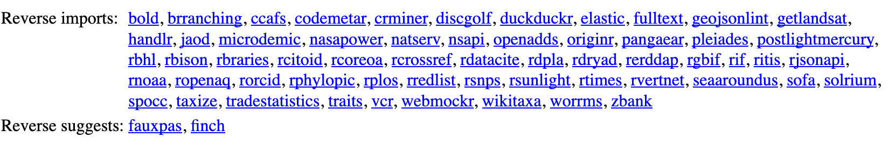
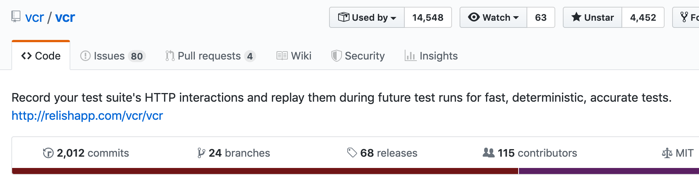
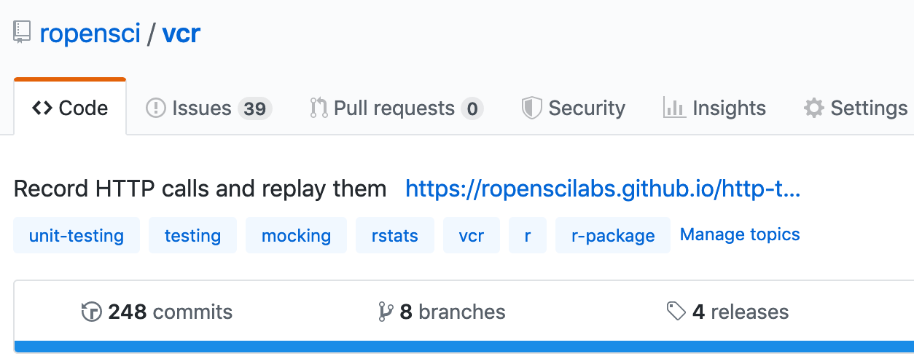

HTTP Requests for Users & Package Developers
Scott Chamberlain ( @sckottie)


3 packages:
crul, webmockr, vcr
rOpenSci has a lot of pkgs that do http requests
giving rise to the tools presented here
crul - a new http client
ropensci/crul
crul - features
asynchronous requests
pagination
supports mocking and caching
writing to disk + streaming
request + response hooks
does not have: OAuth
not something I need ...
crul - lots of example usage

Mocking/caching
webmockr & vcr:
forked from another language (Ruby)
we can take advantage of all they've learned
& both general purpose
work with current and future http pkgs
Other langs
keep an eye out for other languages
what good ideas can we adopt in R land
webmockr - mock http requests
arose: because needed to make vcr
ropensci/webmockr
webmockr - what does it do?
set what you want to match against & what to return
make a request
if it matches you get what you set to return
if it doesn't match: error
webmockr - huh?
webmockr hooks into crul, hijacking the normal request
constructing a response that matches a real response
based on what you told webmockr to respond with
& vcr builds on webmockr ...
vcr - record and replay HTTP requests/responses
arose: observing other language communities &
need to improve testing in many API clients
ropensci/vcr
vcr - hardest software project I've worked on


vcr - how does it work?
vcr - how does it work?
I thought vcr worked by listening for requests in R
realized it most definitely did not
it modifies an HTTP request & looks for a match
so had to make webmockr first
vcr - what does it do?
HTTP requests in a test suite as usual
w/o making real HTTP requests
so you test your package
not the remote service
(p.s. great for rate-limited services)
vcr - no monkey patching in R!
Allowed in Ruby, but not in R
in R we can use
assignInNamespace()
But not allowed on CRAN
vcr - in the works
JSON cassettes
testthatreporter for cassette usagedates
data security , always more to do
responses written to disk
docs: http testing book - bit.ly/http-testing
many more ...